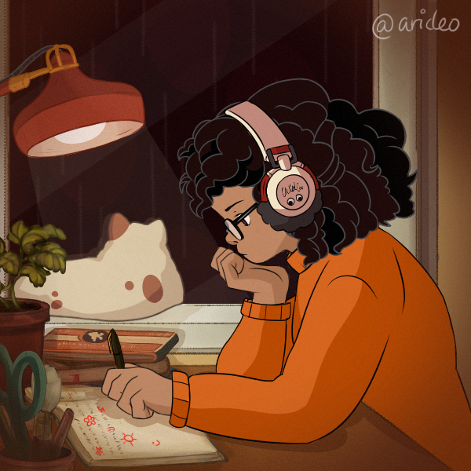

Sam Whitley grew up on Long Island, New York and studies Dramatic Writing at Tisch. When she's not writing scripts for class or playing sudoku, she's on YouTube watching video essays, Dance Moms comilations, or anything animation related.
Here's a couple of fun facts about her!